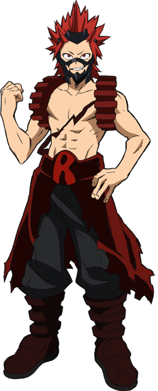

Эйджиро Киришима
Эйджиро Киришима
- Пол: ♂ Мужской
- Рост: 170 см.
- Возраст: 16
- Группа крови: O(|)
- Родился в: Японии
Эйджиро Киришима известный также как Мужественный герой: Красный Бунтарь — студент Юэй, который тренируется, чтобы стать профессиональным героем.
Я знал, что за нашим другом охотятся, но не смог ничего сделать! Если я и сейчас ничего не сделаю... То для меня это смерть как для героя! Как для мужчины!
Внешность
Внешность Эйджиро весьма обычна, за исключением покрашенных в красный цвет волос, уложенных так, что его прическа похожа на скопление небольших острых шипов. Этот цвет волос не является его естественным. Он начал красить их,перед поступлением в Юэй. Во времена учебы в средней школе его прическа была совершенно обычной — прямые, слегка растрепанные волосы чёрного (натурального) цвета.

Над правым глазом у него имеется шрам, который появился в детстве после неожиданной активации причуды. Его зубы имеют остроконечную форму и придают Эйджиро слегка агрессивный вид. Также, несмотря на свой юный возраст он обладает внушительным телосложением.
Его геройский костюм состоит из наплечников, напоминающих зубчатые шестеренки, мешковатых штанов и пояса с пряжкой в виде буквы "R", при этом грудь остается полностью открытой. Вместе с этим он носит маску, слегка напоминающую челюсть хищника. До начала экзамена на геройскую лицензию к его костюму прибавляются длинные тёмно-красные рукава, чтобы защитить спасенных людей от своей причуды.
Личность
Эйджиро весёлый, шумный и общительный парень. У него есть сильное пристрастие к понятию мужественности - к примеру, он использует слова "по-мужски" или "не по-мужски", чтобы описать то, что ему нравится или не нравится, и зациклен на "мужских" поступках. Любой, продемонстрировавший при нём храбрость, благородство или решительность заслужит его безграничное восхищение и уважение и наоборот. Помимо этого, он большой поклонник ретро-героя Алого Бунтаря. Он даже выбрал себе геройское имя в его честь.
Эйджиро честен, добр и прямолинеен. Судя по тому, что он из числа немногих, нормально общающихся с Бакуго, он легко заводит друзей. Ради своих друзей или даже просто знакомых он готов пойти на всё, вплоть до нарушения закона и очень переживает, если не может хоть как-то помочь им.
Эйджиро неоднократно упоминал, что не в восторге от собственной причуды, так как, по его словам, она "не особо броская", но, тем не менее, он страшно обижается, если видит кого-то с похожей причудой. Помимо того, он беспокоится, что его навыки могут оказаться хуже остальных. Такая неуверенность в себе, судя по всему, появилась у него после того, как в средней школе он увидел, как Мина Ашидо защитила младшеклассника от травивших его хулиганов и позже спасла своих одноклассниц от злодея, в то время как он не смог ничего сделать. Друзья Эйджиро отметили, что Мина наверняка станет отличным героем, после чего он стал считать себя слабым и скучным.
Несмотря на это, в настоящее время Эйджиро куда более уверен в себе и всегда ревностно рвётся в бой, пускай и не до такой степени, как Кацуки. Поэтому он не стесняется сравнивать себя с ним не в свою пользу, хотя Изуку Мидория утверждает, что они примерно равны по силе и навыкам. Возможно, именно благодаря этому Эйджиро стал одним из немногих людей, заслуживших уважение и доверие Кацуки.
Причуда
 Отвердение: причуда Эйджиро позволяет ему усиливать прочность наружного покрова тела в несколько раз, что отлично подходит как для защиты, так и для атак. Он может покрывать как отдельные части тела, так и все тело полностью. Недостаток этой причуды заключается в том, что через какое-то время кожа не выдерживает укрепления, и оно начинает мало-помалу рассасываться.
Отвердение: причуда Эйджиро позволяет ему усиливать прочность наружного покрова тела в несколько раз, что отлично подходит как для защиты, так и для атак. Он может покрывать как отдельные части тела, так и все тело полностью. Недостаток этой причуды заключается в том, что через какое-то время кожа не выдерживает укрепления, и оно начинает мало-помалу рассасываться.